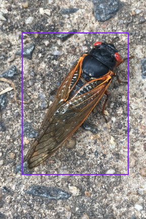
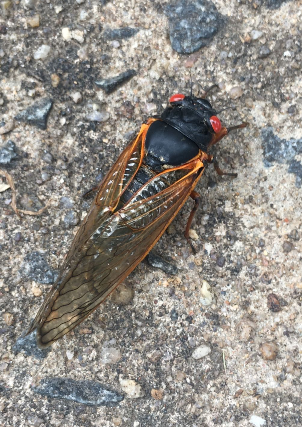

During my senior year in college, I had the opportunity to build my very own AI model to... detect cicadas? As a part of my senior research, I worked with the team at Cicada Safari to help integrate AI into their work to automate the process of identifying cicadas within images, which are user-submitted to their app. The end goal: build an AI model that could positively identify cicadas within an image, and approve or deny a submitted image based on the model's prediction.
At the beginning, the project, to put it lightly, took a nose-dive off a cliff. What sounded like a cool, innovative, and exciting way for me to break into AI and Machine Learning was quickly challenged. For starters, we had no server. This meant we had no images to use, and would have to use our own personal machines to train any models if we wished. Luckily, supplies were 'on-the-way', but any updates were followed by silence. Additionally, trying to learn AI from scratch is not very easy. I opted down the path of Tensorflow, as we were required to use Python and I had heard good things from Tensorflow in my very limited research. Something felt off... tensors?? Large-scale ecosystem involving Tensorflow Core, .js, Lite, Serving, and Extended TFX?? There had to be a better way to accomplish what I was after. And there was.
At about this time, Dylan Drummey dropped this bombshell, which I happened to look into very heavily. Using simple annotation methods, BaseballCV used YOLO, a library of Python, to predict objects within images. It was perfect; I could essentially copy their project strategy and predict cicadas instead of baseballs. Thus, work towards the actual project began.
Side note: If you wish to understand the deeper technical aspect, I have provided a link to the YOLO Documentation. It goes into much deeper depth into the nitty gritty of image detection than I do here!
Around this time, we were still in the dark in regards to the server and the database of hundreds of thousands of valid cicada images, so I continued to tinker and research. I played around with the BaseballCV repo, built a couple small models of my own, and essentially just toyed around until I felt I had a solid (enough) grasp on the matter. After about a week and a half, the server was delivered and booted up, and we were given access to a beast: An NVIDIA RTX A4500 for computing and a hard drive with over 500GB in cicada pictures (~690,000 images).
Initially, around a thousand images were manually annotated over the course of a week or so. Annotation is how the model understands the images. Simply put, the model is fed images with a bounding box surrounding all objects that you would like to detect within the image... or at least that's how we understand it.
This is how we would view an annotated image. Draw a bounding box around our object which is simple enough. However, that's not how our model understands it. Our model would understand (and be trained on) this raw data:
0 0.477 0.531 0.461 0.394
What does this mean? Once you understand it, it's simple enough: the initial 0 represents the class. In our case here, 0 represents a cicada class. Other class examples could be detecting eyes or wings. These classes are what you are trying to detect with your model, and there can be multiple per image, if you wish. The numbers after the 0 are coordinate points, so (0.477, 0.531) and (0.461, 0.394). These 2 coordinate points are essentially our box, but just in math form. These points are telling our model, "hey, there is a cicada here within this box". All of this would be done automatically, thanks to the help of Roboflow. All I had to do was manually draw a box around the cicada, and Roboflow would automatically generate the coordinates based on my drawn box.
Once almost a thousand images were annotated, it was time to train. How exciting!... except I forgot I was new to this. Multiple days just to train the model? I thought that something had to be off, but there was nothing. Nothing I could do except kick my feet up and wait.
After the model had finished training, I was gifted with a plethora of data to look back on. The YOLO library automatically generates tons of graphs and information regarding the model and how it is doing in regards to different methods of accuracy. I'll provide images that the library generated, but I need to explain the concept of a Confidence Threshold first. A Confidence Threshold is simply a percentage number of how confident the model is on its prediction. Because of the complexity of computer vision, a model will almost never output a 100% confident prediction. Therefore, we can manually alter the confidence "threshold" that the model will approve. For example, suppose that given an image, the model gives a confidence of 60% that it found a cicada within the image. If our threshold is below 60%, then the image would be approved. If the confidence threshold is above 60%, the image would not pass as it did not detect a cicada at the required confidence.
But, there is a tradeoff for both. If we set the model to a lower confidence, the model will make more predictions, but they will be less accurate and could potentially lead to the model overfitting and predicting false positives. At a higher confidence, the model will make less predictions, and the predictions they make would be more accurate, but the model could potentially miss actual cicadas if they are more difficult to detect. So, we must evaluate our model based on the statistics to get the most optimal outcome.
This is what is called an "F1 Curve". In Machine Learning, an "F1 Score" is a general metric that measures the model's accuracy by combining the precision and recall scores of the model. By providing a confidence threshold, the F1 Score will calculate approximately how accurate the model will make correct predictions across the entire dataset. If you go to a confidence of around 0.7 (70%), and find the graph intercept, it would be around .75 (75%) or so on the F1 axis. This is saying that given a confidence threshold of 70%, the model would be around 75% accurate. Pictured above is the very first model we ran.
This is what is called a Recall Confidence Curve. This curve measures how well the model is making sure that all cicadas within an image are detected. Basically, this curve is showing how good the model is at not missing any cicadas. If you give it a 0% confidence, it will detect around 90% of all cicadas in the database, which is not fantastic.
This is what is called a Precision Confidence Curve. This curve measures how well the model is making correct predictions, aka avoiding false positives. In the legend, you'll notice a "all classes 1.00 at 0.934" label. This is saying that if you give the model a confidence threshold of 93.4%, the model will make 0 false positive predictions; Much room for improvement.
This is a Precision-Recall Curve. It essentially combines the previous two graphs, and shows the tradeoff factor I mentioned when discussing the confidence threshold. As Recall goes up, Precision goes down, and vice versa. This graph is especially important as it helps us to figure out what the "sweet-spot" should be in determining our confidence threshold.
Once the model is finished, we can test and refine it. Using some simple python code, we can make predictions on new images. Here are some examples of outputs from the model:
That's as much as I can show! All of the images and graphs are from a prototype of our official model, but the steps I took are there. This project made me fall in love with the concept of computer vision modeling and its potential applications. Definitely more CV projects in the future!